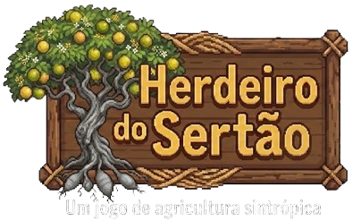
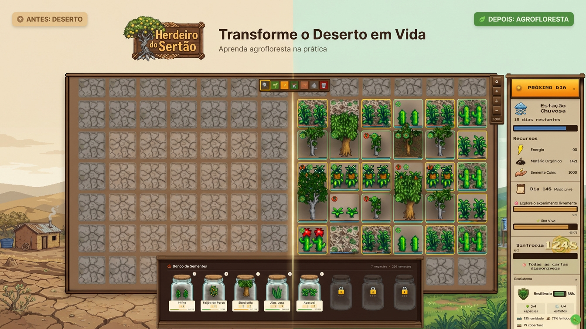
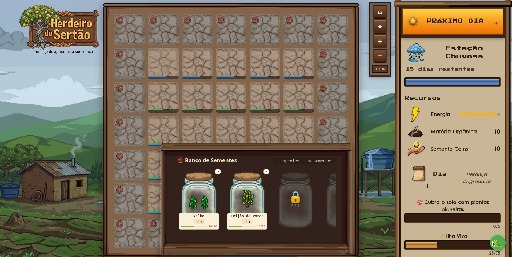
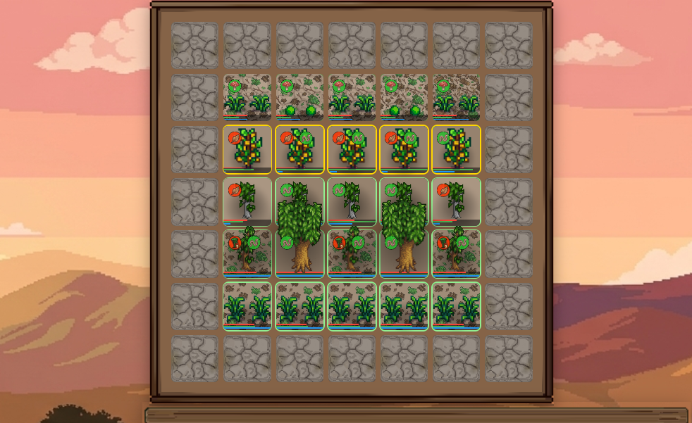
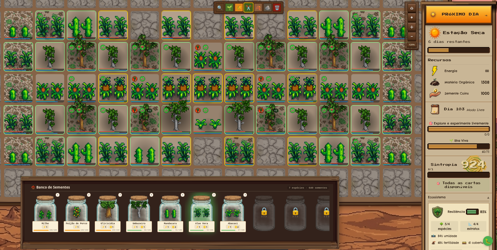
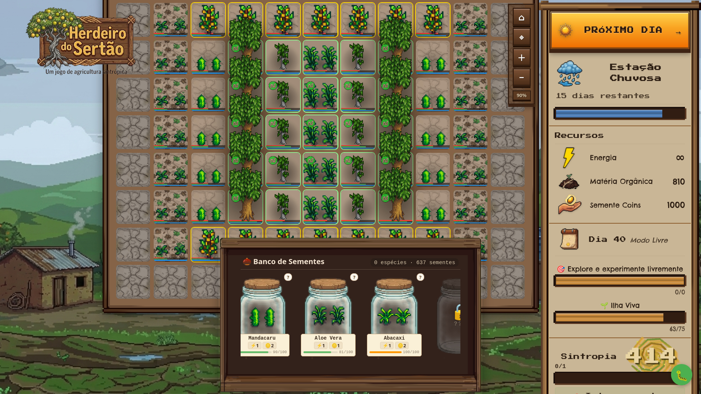
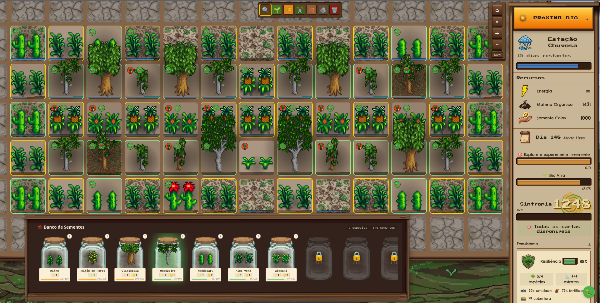

Banco de Sementes
Nada de baralho ou pacotes aleatórios. Você administra potes de sementes crioulas — plantar, podar e colher é decidir o futuro da sua roça.

Jogo narrativo de estratégia e manejo ecológico na Caatinga. Aprenda com famílias agricultoras a regenerar o solo sem insumos, cuidar do seu Banco de Sementes e enfrentar a desertificação — grátis no navegador.
Um jogo de estratégia e narrativa que transforma manejo ecológico real em decisões de cultivo na Caatinga.
Nada de baralho ou pacotes aleatórios. Você administra potes de sementes crioulas — plantar, podar e colher é decidir o futuro da sua roça.
Secas severas, chuvas fortes que lavam solo exposto, pragas indicadoras e expansão do terreno testam sua capacidade de ler a terra.
Aprenda jogando como cobertura de solo, consórcios, poda estratégica, estratos e sucessão ecológica ajudam a reter água e fertilidade.
A Caatinga se desenvolveu no semiárido por milhares de anos — sem irrigação, sem insumos de fora, sem humanos. Este é o foco do jogo: aprender com ela, com o que se tem — ferramentas básicas, água da chuva e fé.
A chuva é para todos, sem distinção. Não há torneira, bomba ou mangueira: o manejo guarda a água no solo com cobertura, sombra e raízes.
A fertilidade nasce da própria vida: poda, palha, decomposição e raízes que alimentam o solo. O que cai da planta volta para a terra.
Enxada, mãos e paciência. As maiores árvores do mundo cresceram sem motor — e a agricultura sem insumos também pode.
A Caatinga se desenvolveu no semiárido por milhares de anos — sem irrigação, sem insumos de fora, sem humanos. O umbuzeiro guarda água nas raízes, as folhas caem para cobrir o solo e cada espécie é preparada para esse clima. Só precisamos aprender. A vida tenta isso a todo instante — agora mesmo, uma semente germina cheia de esperança. Ajude-a.
Essa sabedoria está viva na agricultura familiar do semiárido, onde irrigação é sempre um problema e maquinário de grande porte não existe. É dessa realidade que este jogo nasce: poucas ferramentas, a chuva que é para todos e o manejo como estratégia. Se você tem um trator, beleza, use-o — mas essa não é a realidade da maioria das famílias.
Sem insumos industriais — mas o mundo não é binário. Trocar uma semente, aceitar um presente, devolver na colheita: isso é economia solidária, e é bem-vindo. O que recusamos é a dependência de cadeias produtivas que não cabem na realidade de quem tem pouca terra.
A CHUVA É PARA TODOS, SEM DISTINÇÃO.Acompanhe uma partida comentada contra a desertificação e conheça a história por trás do projeto.
Veja na prática como manejo ecológico, consórcios, poda, ciclos de chuva e seca e expansão da área transformam uma terra degradada na Caatinga.
Anderson Morize (Texugo) conta como a vivência no semiárido e a lógica da programação se uniram para criar um jogo gratuito sobre regeneração ecológica.
Quando você muda o manejo, a terra responde — no jogo e no campo.

Você começa com uma área cansada e compactada na Caatinga. Tentar repetir a lógica da monocultura logo mostra seus limites quando o solo fica exposto e a água não para.
Com cobertura morta e viva, consórcios, podas que viram matéria orgânica e atenção aos sinais do solo, a terra escurece, ganha umidade e abre espaço para a biodiversidade.
Inspirado na agricultura sintrópica e na vivência no semiárido, o jogo convida a enxergar a terra não como um recurso a esgotar, mas como um ecossistema a co-criar.
Acompanhe a evolução do tabuleiro entre chuvas, secas e diferentes estágios de manejo.





Cada escolha consome energia e altera o equilíbrio do solo ao longo das estações.
Leia os indicadores de fertilidade, umidade e cobertura, e ouça as orientações da mentora antes de agir.
Use sua energia para plantar sementes do banco, cobrir o solo, podar, descompactar ou colher.
O solo reage às suas escolhas — ganhando vida e proteção ou sofrendo com exposição e desequilíbrio.
Os dias passam, as plantas crescem, o clima muda e o Mercado de Sementes pode surgir — economia solidária de trocas e presentes, sem insumos industriais.
Colha alimentos, matéria orgânica e sementes, desbloqueie novas espécies e prepare-se para ampliar a área cultivada.
Cada espécie cumpre um papel no sistema — do apoio rápido ao solo até culturas perenes e resistentes à seca.
Ciclo curto para apoiar o início da jornada; exige atenção à fertilidade e à proteção do solo.
Essencial para cobertura e recuperação do solo, favorecendo consórcios no sistema.
Árvore perene de manejo; gera boa quantidade de matéria orgânica com podas e ajuda a criar microclima.
Símbolo resistente da Caatinga; ciclo longo, forte tolerância à seca e alto retorno quando maduro.
Cacto resistente ao semiárido, adaptado à escassez hídrica e a condições severas.
Suculenta perene resistente à seca, útil para podas, colheitas e composição do sistema.
Cultura de ciclo mais longo e maior valor de colheita, pedindo cuidado com umidade no começo.
Conjunto inicial de espécies do MVP usado para testar papéis ecológicos, podas, colheitas e consórcios. Novas espécies nativas da Caatinga e cultivos estão previstos na evolução do jogo.
A história acompanha a mudança de olhar de quem chega — da terra castigada à abundância construída com cuidado.
Uma tentativa de monocultura expõe a fragilidade do solo cansado — e apresenta a mentora que aponta outro caminho.
Nas chuvas, o foco deixa de ser só colher e passa a ser cobrir e proteger a terra com pioneiras.
Com o solo mais protegido, entram diversidade e estratos para fortalecer os consórcios.
Na entrada da seca, podar vira gesto de manejo para gerar matéria orgânica e preparar o sistema.
No auge da seca e ao fim do ciclo, sombra, cobertura e manejo colhem frutos, sementes e aprendizado.
Pensado para quem quer aprender, ensinar ou experimentar ecologia aplicada na prática.
Material de apoio para trabalhar Caatinga, desertificação, ciclos naturais e manejo do solo — alinhável a projetos pedagógicos do semiárido e a temas da BNCC.
Espaço seguro para testar estratégias de cobertura, poda, consórcios e planejamento sazonal.
Uma experiência diferente de estratégia e manejo ecológico, com tema brasileiro e propósito ambiental.
Herdeiro do Sertão nasce da vivência com famílias agricultoras na Caatinga — onde irrigação é sempre um problema, maquinário de grande porte não existe e a criatividade do manejo é o que sustenta a roça. Experiências em comunidades do Seridó potiguar, como o Povoado Barra, o Sítio Piabas, o Povoado Joazeiro e o Sítio Tapera, inspiraram a tradução de processos ecológicos em mecânicas de jogo.
O projeto é independente, autofinanciado e sem fins lucrativos, voltado à educação ambiental. Sai do bolso e do tempo de quem o faz, aberto a boas interações. Cada atualização é um ato de resistência e fé — resistência no sentido de continuar existindo e melhorando sem depender de instituições.
Política de colaboração: jogue, dê feedback, apresente na sua escola. O jogo melhora com o uso. Quem quiser acelerar melhorias pode contribuir — mas o jogo continuará gratuito.
Idealizado por Anderson Morize (Texugo), desenvolvedor e agrofloresteiro em Parelhas, no Seridó potiguar. O repositório permanece privado para evitar republicação irrestrita por IA, com acesso sob consulta direta ao autor.
Sim. Você pode jogar direto no navegador, sem pagar nada e sem criar conta.
Não. Basta abrir o link do jogo em um navegador atualizado no computador ou celular.
Sim, o jogo roda no celular, embora telas maiores ofereçam mais conforto visual para acompanhar o tabuleiro.
Por enquanto, o jogo está disponível apenas em português (pt-BR).
Porque o jogo ensina agricultura sem insumos. A água disponível é a da chuva, que é para todos, sem distinção. O papel do jogador é guardá-la no solo com cobertura, sombra, raízes e manejo — não levar água até a planta com bombas ou mangueiras.
Não. A fertilidade vem da própria vida: poda, palha, decomposição e raízes que alimentam o solo. É a natureza reciclando o que já existe, sem comprar insumos de fora.
Não. Os personagens têm ferramentas básicas e mãos. Se você tem um trator na vida real, use-o — mas essa não é a realidade da maior das famílias, e este jogo nasce dessa realidade: poucas ferramentas, sem maquinário, mas com a natureza e sua sabedoria.
Não. O jogo não propõe substituir a agricultura de larga escala — propõe devolver autonomia a quem tem pouca terra. Se você tem trator, use; a questão é que essa não é a realidade da maioria das famílias.
Porque insumo industrial não é a mesma coisa que troca comunitária. O mercado do jogo é economia solidária: trocar sementes, aceitar um presente, devolver na colheita. O que recusamos é a dependência de insumos comprados de fora.
É autofinanciado: o tempo e o recurso saem de quem faz o projeto, aberto a boas interações. Cada atualização é um ato de resistência e fé. Quem quiser acelerar melhorias pode contribuir, mas o jogo continuará gratuito.
Não, está em evolução contínua. Esta versão representa um MVP jogável, com melhorias constantes de interface, balanceamento e conteúdo.
A proposta valoriza o compartilhamento e a troca, mas o código-fonte não é público irrestrito para evitar cópias automatizadas por IA. Você pode falar com o autor pelo GitHub para solicitar acesso.
Sugestões de educadores, agricultores, agrofloresteiros e jogadores são muito bem-vindas via GitHub ou e-mail.
Escreva para andersonmorize@gmail.com.
Desenvolvimento, design e narrativa: Anderson Morize (Texugo).
Artes: algumas geradas com apoio de IA; sprites de milho, feijão, gliricídia, aloe vera, abacaxi e cardeiro inspirados em Stardew Valley (ConcernedApe).
Trilha sonora: álbum Plantasia (Mort Garson, 1976) — licenciamento em revisão.
Referências ecológicas: Ernst Götsch, José Fernando Rebello, Forests4Farming, CEPEAS.